The catalyst. It oxidises formic acid well, until carbon monoxide blocks its surface.
83BiBismuth
The modifier. A thin layer blocks the sites where CO forms, and less turned out to be better.
6CCarbon
The support. Commercial 20 wt% Pt/C carries the platinum as nanoparticles.
HCOOHFormic acid
The fuel. Liquid, easy to store, and it barely crosses a Nafion membrane.
What I work on
Catalyst synthesis
Wet-chemical routes for modifying commercial catalysts, from adsorption and reduction to heat treatment under argon, and making those routes safe to scale.
Electrodes and inks
Catalyst inks, ionomer loading and drop-cast electrodes on glassy carbon and carbon paper, and understanding why a thinner binder film can win.
Electrochemical testing
Three-electrode measurements on an Autolab potentiostat: cyclic voltammetry, active surface area and hour-long durability holds, backed by SEM, EDX, XRD and BET.
I'm a Management Trainee at LOXIM Industries in Ahmedabad, where I run technology selection for effluent treatment, including electrocoagulation and electroflocculation.
What I'm looking for
Hands-on electrode and cell work in green hydrogen, electrolysers or fuel cells, where I can take what I learned in half-cells into full devices. I'm also open to PhD positions in electrocatalysis.
Projects
Lab research, computation and process design from my M.Tech at IIT Madras and my semester at NTNU. Each one has its own page with methods and results.
As a B.Tech student I worked on a biodegradable cellulose film made from banana peel, and presented a paper at SCHEMCON 2021 in Bhopal.
Journey
Most recent first: my first industry role, an M.Tech at IIT Madras with a research semester in Norway, GATE, and the B.Tech I started with.
July 2026 onward
Management Trainee, LOXIM Industries
Ahmedabad
My first industry role: selecting effluent treatment technology, including electrocoagulation and electroflocculation, and working with vendors on trials.
2024 to 2026
M.Tech, Catalysis Technology
Department of Chemical Engineering, IIT Madras
Catalysis from the ground up: adsorption, solids and surfaces, reactor theory, catalyst preparation and characterisation in the lab, and computational methods. I finished with a CGPA of 8.51.
July 2026Received my degree at the 63rd convocation of IIT Madras.
May 2026Submitted my M.Tech thesis.
August to December 2025
Semester exchange at NTNU, Trondheim, Norway
Five months in the Department of Chemical Engineering on a UTFORSK scholarship. I worked on the thesis synthesis in Prof. Edd Anders Blekkan's group and joined a four-person process design project with two Norwegian industry partners.
I also attended EuropaCat 2025, the European catalysis congress, held in Trondheim. In November I presented our NOx reduction work at Treforedlingsforum 2025 in Oslo.
May 2025Started my thesis on Bi-modified Pt/C catalysts with Prof. Raghuram Chetty.
April to May 2025GIAN course on characterising heterogeneous catalysts.
January to May 2025DFT project on oxygen reduction over a Pt13 cluster.
August 2024 to July 2025Deputy Placement and Internship Coordinator for the M.Tech programme.
February 2024
GATE 2024, Chemical Engineering
All India Rank 864 out of 13,937 candidates, which opened the door to IIT Madras.
2019 to 2023
B.Tech, Chemical Engineering
Indore Institute of Science and Technology, affiliated to RGPV Bhopal
The core of chemical engineering: mass and heat transfer, reaction engineering, process control, equipment design and process safety. I graduated with a CGPA of 8.17 and a First Division with Honours.
During B.TechProject on a biodegradable cellulose film made from banana peel.
October 2021Presented a paper at SCHEMCON 2021, organised by MANIT and IISER Bhopal.
Photos along the way
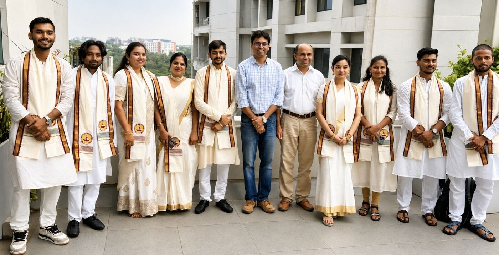
My M.Tech Catalysis Technology batch with faculty on convocation day.
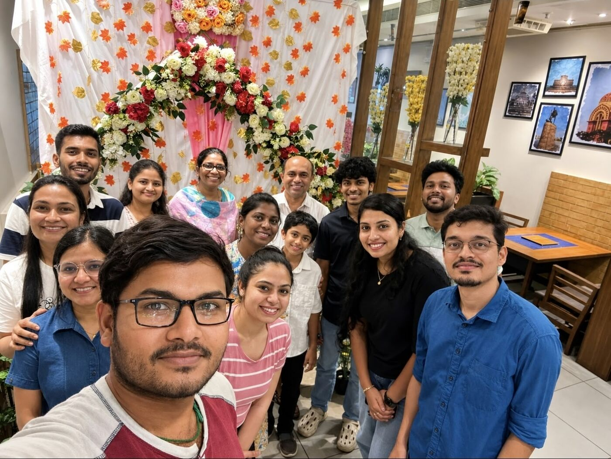
With my thesis supervisor's research group at IIT Madras.
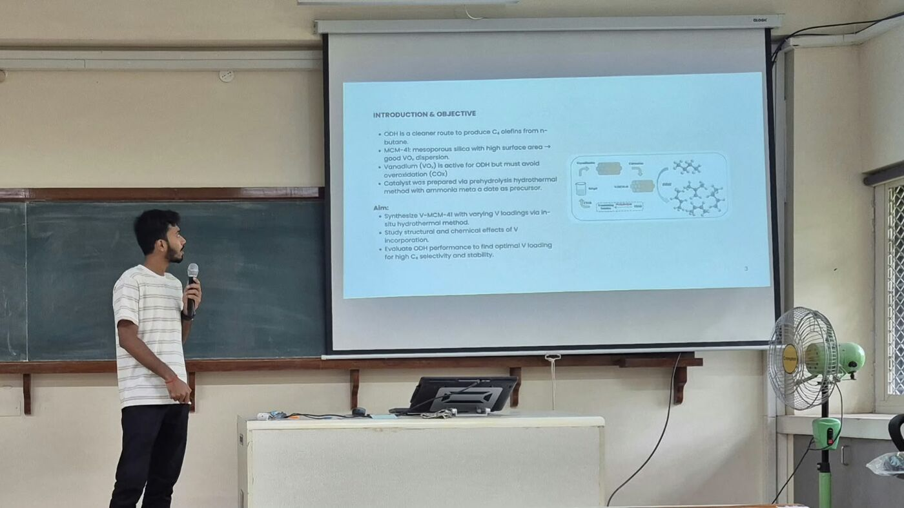
Presenting a course project to the class at IIT Madras.
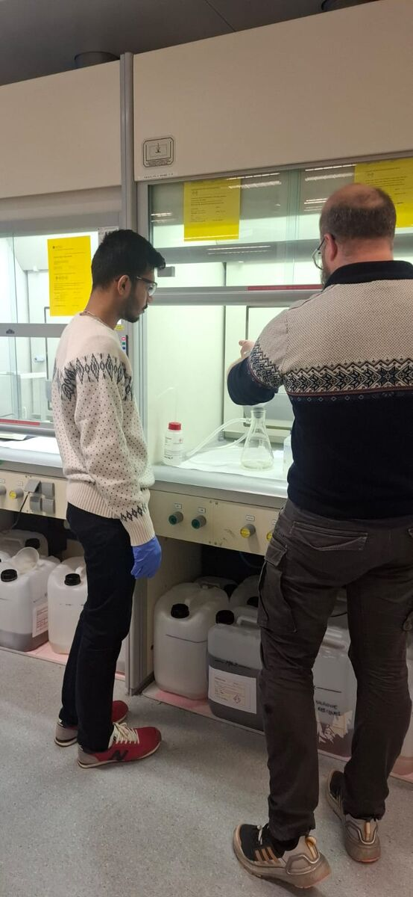
In the lab at NTNU during the catalyst synthesis.
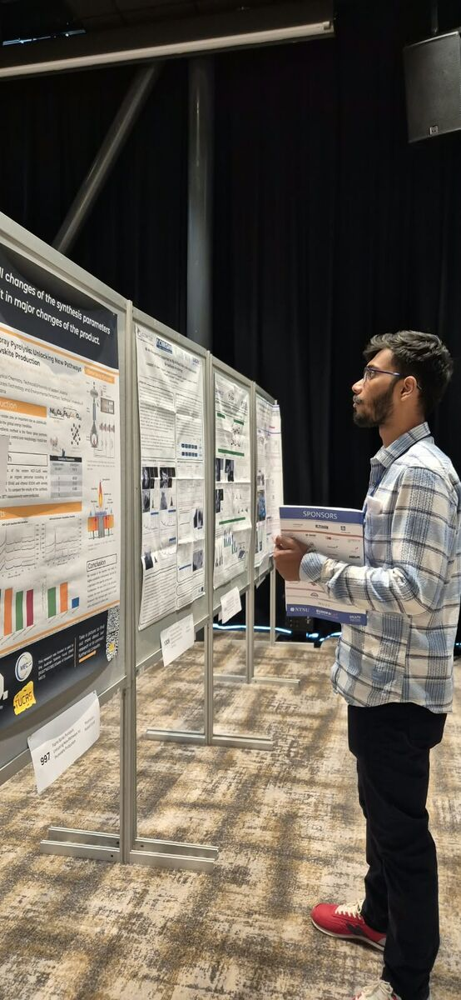
Reading the poster session at EuropaCat 2025.
CV
A short version of my CV. The PDF has the full details.
Wet-chemical synthesis, catalyst inks, ionomer loading, drop-cast electrodes on glassy carbon and carbon paper
Characterisation
SEM-EDX, XRD, BET, XPS, TGA, FTIR, UV-Vis, HPLC, GC-MS
Computation and data
OriginPro, Python with Cantera, Gaussian 16, Avogadro, Excel
Process engineering
Mass and energy balances, process flow sheets, process safety, technology evaluation
Languages
English (IELTS Academic 7.0), Hindi
Awards, talks and conferences
Poster presentation, Treforedlingsforum 2025
Nov 2025
Oslo, Norway
Attended EuropaCat 2025
2025
Trondheim, Norway
UTFORSK mobility scholarship
2025
Department of Chemical Engineering, NTNU
GIAN course, characterisation of heterogeneous catalysts
Apr to May 2025
IIT Madras
GATE 2024, Chemical Engineering, All India Rank 864
Feb 2024
Out of 13,937 candidates
Paper presentation, SCHEMCON 2021
Oct 2021
MANIT and IISER Bhopal
Last updated October 2026.
Projects / Oxygen reduction on a 13-atom platinum cluster
Oxygen reduction on a 13-atom platinum cluster
A DFT look at the four-electron oxygen reduction pathway on a small platinum cluster.
Energy along the four-electron pathway, with the optimised structure at each step. The points are calculated; the line joining them only guides the eye, since no transition states were located. From my project report
The question
Oxygen reduction is slow even on platinum, and it is the reaction that limits fuel cell cathodes. Small clusters like Pt13 have edge and corner sites that behave differently from flat surfaces. I wanted to see how the reaction intermediates sit on such a cluster and whether each step is energetically favourable.
What I did
Built the structures
The Pt13 cluster and the O2, OOH, O, OH and H2O species were built in Avogadro.
Optimised them
Gaussian 16 with the spin-unrestricted B3LYP functional, LANL2DZ for platinum and 6-31G(d,p) for hydrogen and oxygen.
Checked them
A frequency calculation on every structure confirmed it was a true minimum, with no imaginary frequencies.
Built the energy profile
Step energies along the associative four-electron pathway, from the electronic energies.
What I found
Energy change for each step
Step
Change in energy (eV)
O2 adsorbed on Pt13 (reference)
0
OOH* forms
−2.84
O* and water form
−2.05
OH* forms
−1.85
Water released, cluster regenerated
−3.90
Every step was downhill, which fits the known activity of platinum for this reaction and supports using small clusters for mechanistic work.
Limits
These are electronic energies only, without zero-point, thermal or entropy corrections, and no transition states were located. The profile shows which intermediates are stable, not how fast each step goes.
Type
Course project, Computational Methods in Catalysis
Where
IIT Madras
When
January to May 2025
Guide
Dr. Jithin John Varghese
Tools
Gaussian 16, Avogadro
Method
DFT, UB3LYP, LANL2DZ and 6-31G(d,p)
Projects / Making the catalyst synthesis safe to scale
Making the catalyst synthesis safe to scale
Three batches of Bi-modified Pt/C at NTNU, one ignition on the filter, and a cleaner aqueous route at the end of it.
At the SEM in the NTNU cleanroom, checking a batch.
The problem
The thesis needed one synthesis route I could rely on, and the first route I tried did not give it. I ran the Bi-modified Pt/C synthesis in three batches at NTNU and changed it after each one.
Batch by batch
Batch 1: following the paper
The literature procedure recovered very little catalyst. Most of the loss happened during filtration, and SEM showed irregular, sheet-like features that pointed to contamination during recovery.
Batch 2: scaling up
A larger batch raised the yield, but leftover sodium borohydride ignited during filtration.
Batch 3: changing the route
I replaced the solvent-based reduction with an aqueous borohydride step, used less reductant and changed the filtration. There was no ignition, and the batch gave the highest recovered mass, about 220 mg.
Adsorbing Bi³⁺ onto Pt/C under magnetic stirring, the first step of every batch.Working through the synthesis at the fume hood in the NTNU lab.
What the material looked like
SEM of the later batches showed densely packed nanoclusters with a rough, raspberry-like surface and evenly spread metal particles across the carbon support, without the irregular features seen in the first batch.
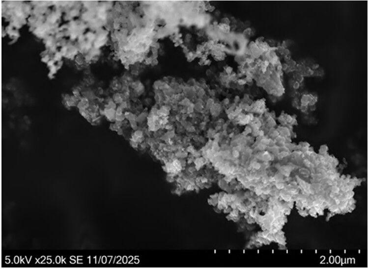
The catalyst at 25,000×: agglomerated nanoclusters with a rough, raspberry-like surface. UTFORSK technical report, Fig. 2
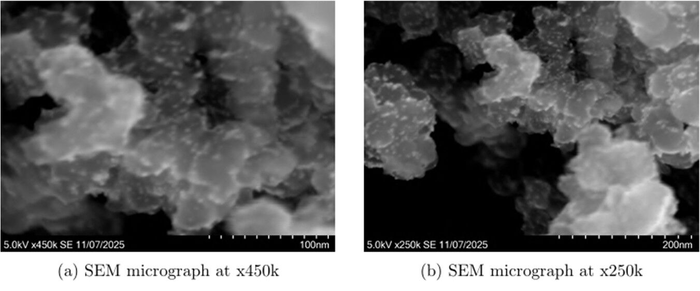
Batch 3 at 450,000× and 250,000×. The bright specks are metal particles spread over the carbon. UTFORSK technical report, Figure 3
What I took from it
Procedures that work at milligram scale can behave differently when you scale them, and safety problems often show up in the handling steps rather than the reaction itself. The thesis catalyst series was made with a fully aqueous route.
Type
Lab research, part of my thesis
Where
Department of Chemical Engineering, NTNU, Trondheim, Norway
When
August to December 2025
Host
Prof. Edd Anders Blekkan
Funding
UTFORSK mobility scholarship
Methods
Aqueous chemical reduction, filtration and drying, SEM
Could a selective non-catalytic reduction retrofit bring an upgraded biomass boiler under its NOx limit?
With my teammates beside our poster at Treforedlingsforum 2025 in Oslo.
The question
An existing biomass boiler, run today for district heating by Vardar Varme, will be upgraded to 30 to 35 MW to supply steam to Billerud Viken's planned bleached chemi-thermomechanical pulp (BCTMP) mill. Burning biomass produces NOx, and the plant has to stay under 300 mg/Nm³. Our team of four looked at whether a selective non-catalytic reduction (SNCR) retrofit could get it there, for Billerud Viken.
How we approached it
Estimated the starting point
Uncontrolled NOx came out at 280 to 330 mg/Nm³, in the range where SNCR is effective.
Checked the operating window
Mass and energy balances gave a flame temperature near 1250 °C and a flue-gas residence time of 0.6 to 2 s, both suitable for SNCR.
Modelled the chemistry
A combustion equilibrium model and a plug-flow SNCR kinetic model in Python with Cantera, using the GRI-Mech 3.0 and San Diego mechanisms.
Designed the system
Ammonia was chosen as the reagent for cost and performance. We laid out storage, mixing and injection, sized the main equipment, set out ammonia safety measures and estimated capital and operating costs.
What we found
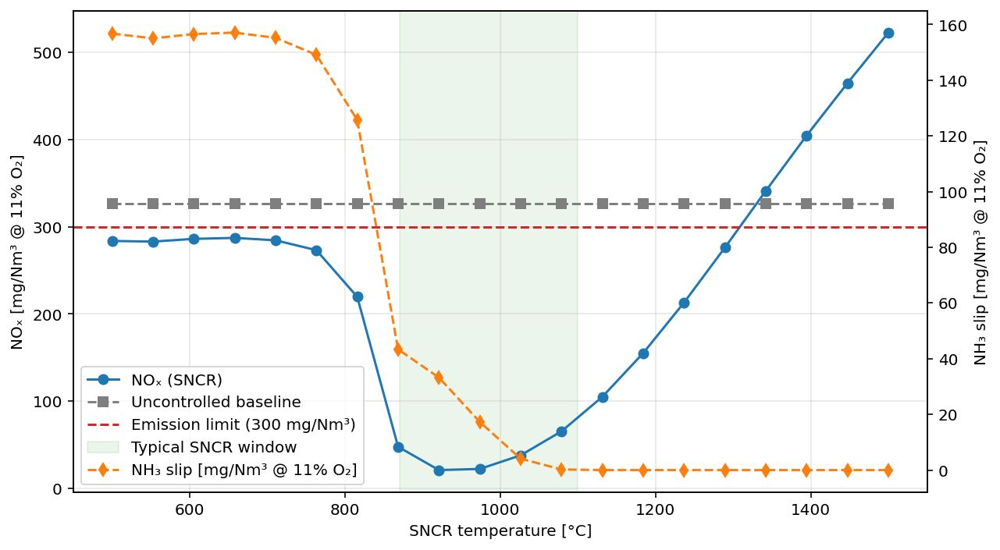
Modelled NOx with and without SNCR across injection temperatures. The red dashed line is the 300 mg/Nm³ limit and the shaded band is the usual SNCR window. Team report, Figure 4.6 (baseline case)
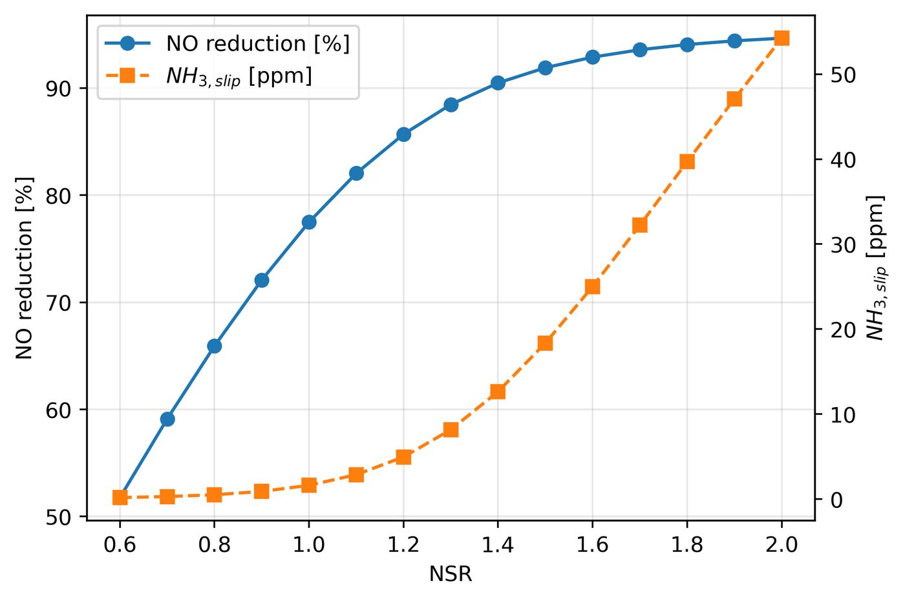
More ammonia removes more NO, but the unreacted ammonia slipping through rises steeply. Team report, Figure 4.3
A realistic reduction of about 60% brings emissions to roughly 95 to 120 mg/Nm³, well under the limit. Because both performance and ammonia slip depend strongly on temperature, the study recommends injecting towards the upper end of the temperature window. Reagent use dominates the running cost.
I presented the work as a poster at Treforedlingsforum 2025 in Oslo in November 2025.
What I took from it
This was my first design project for an industry client. It taught me to work from incomplete plant data, state assumptions clearly, and give a recommendation a client can act on.
Type
Process design project (TKP4170)
Where
NTNU, Trondheim, Norway
When
August to November 2025
Team
Four students
Supervisor
Prof. Øyvind Weiby Gregersen
Client
Billerud Viken (boiler operated by Vardar Varme AS)
Tools
Python, Cantera, Excel
Presented at
Treforedlingsforum 2025, Oslo
Projects / Keeping platinum clean in formic acid fuel cells
Keeping platinum clean in formic acid fuel cells
My M.Tech thesis: bismuth-modified platinum catalysts and a quinone mediator, tested for activity and for how long they hold their current.
Inside the half-cell: a coiled platinum wire as the counter electrode, the reference electrode, and a catalyst-coated carbon paper working electrode.
The question
Formic acid is an attractive fuel for small fuel cells: it is liquid, easy to store and barely crosses a Nafion membrane. Platinum oxidises it well at first, but a side reaction leaves carbon monoxide stuck to the surface. As the platinum fills up, the current drops within the first hour.
I tested two fixes, and whether they help or hinder each other. The first was decorating commercial Pt/C with bismuth, which is known to block the sites where CO forms. The second was adding a dissolved quinone, AQSA, that can shuttle charge around blocked sites.
What I did
Made four catalysts
Commercial 20 wt% Pt/C was soaked for 48 hours in bismuth nitrate solutions at 1.25, 2.5, 5 and 10 mM in dilute sulphuric acid under nitrogen, then reduced with sodium borohydride and heat-treated at 300 °C under argon.
Tracked where the bismuth went
FE-SEM, EDX averaged over four spots per sample, powder XRD and, for the best catalyst, nitrogen physisorption.
Tuned the catalyst ink
5 mg of catalyst in water and isopropanol, with either 5 µL or 20 µL of Nafion as binder.
Built and tested electrodes
Drop-cast on polished glassy carbon for voltammetry and on 1 cm² carbon paper for long tests, measured in a three-electrode cell on an Autolab potentiostat. I also screened AQSA at 0, 1, 2 and 10 mM.
Ran durability tests
Each catalyst was held at 0.55 V vs RHE for 3600 s, with and without 1 mM AQSA.
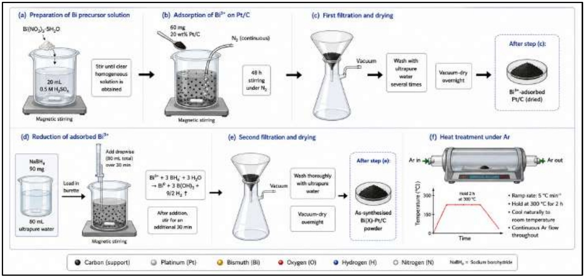
The synthesis route for the Bi(X)-Pt/C series: bismuth adsorbed onto Pt/C under nitrogen, filtered, reduced with borohydride, filtered again and heat-treated under argon. From my thesis, Figure 3.1
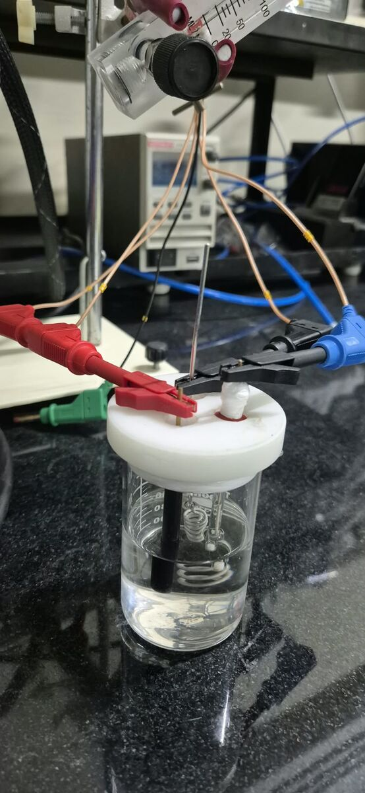
Glassy carbon electrode in the cell for cyclic voltammetry.
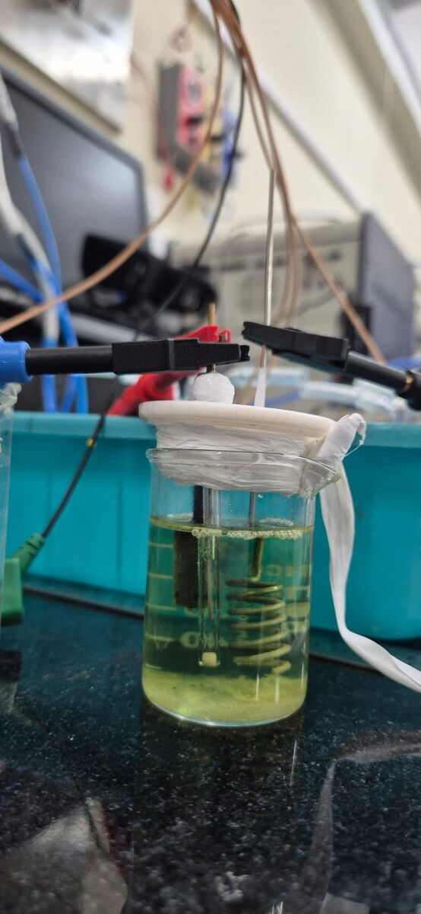
Carbon paper electrode set up for the one-hour durability holds.
What I found
Where the bismuth went
At the two lowest loadings there were no separate bismuth crystals in SEM or XRD: bismuth sat on the platinum as a thin decoration. At 10 mM, bright Bi-rich clusters appeared and covered much of the platinum.
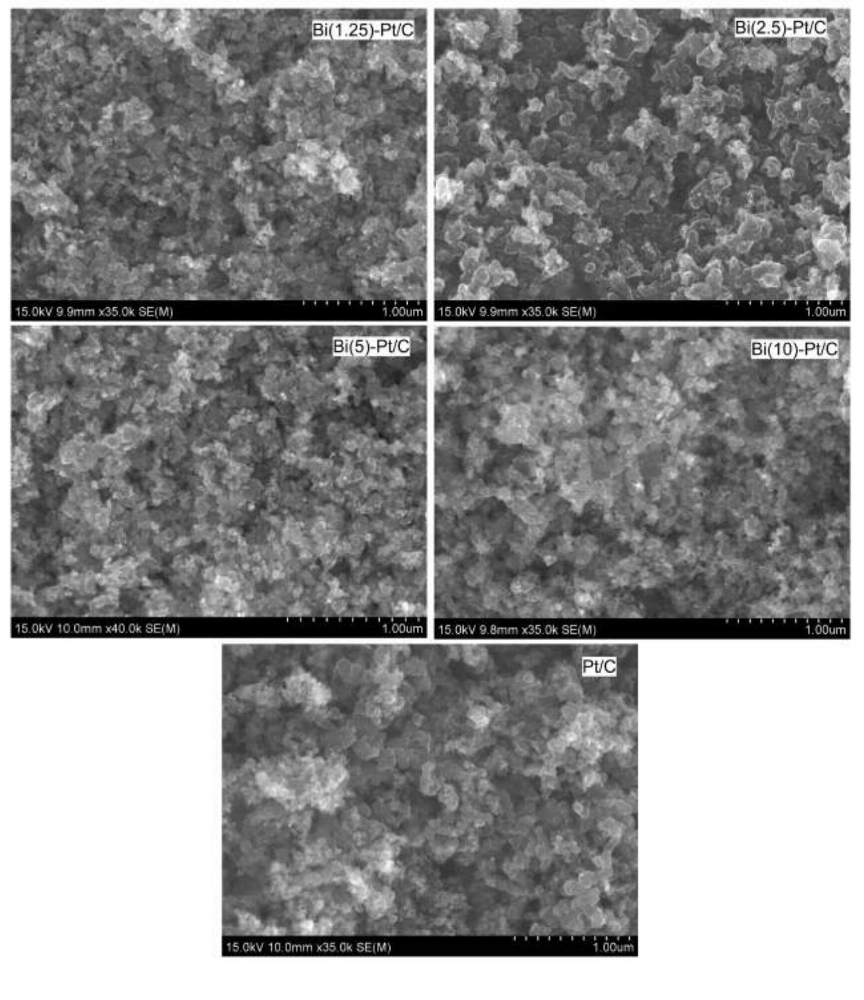
FE-SEM of the five catalysts at comparable magnification. Thesis, Figure 4.1
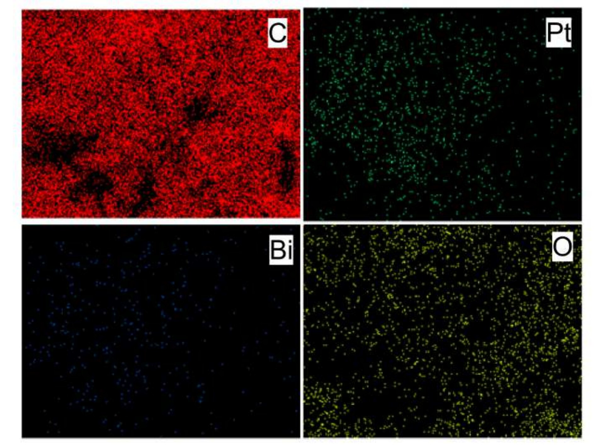
EDX maps of Bi(2.5)-Pt/C. Bismuth is spread evenly across the sample rather than gathered in patches. Thesis, Figure 4.2
Composition from EDX, four-spot average
Catalyst
Bi (wt%)
Bi-to-Pt ratio
Pt crystallite size (nm)
Commercial Pt/C
0
0
2.51
Bi(1.25)-Pt/C
0.60
0.034
3.52
Bi(2.5)-Pt/C
1.08
0.132
3.53
Bi(5)-Pt/C
9.35
0.706
2.68
Bi(10)-Pt/C
20.49
2.200
3.44
Crystallite sizes from the Pt(111) reflection using the Scherrer equation. The best catalyst had a BET surface area of about 122 m²/g.
Less Nafion, more current
The thinner Nafion film gave 2.4 to 2.8 times higher peak current, even though the thicker film showed slightly more active area on plain Pt/C. The active-area test only needs protons to reach the platinum, but formic acid has to diffuse through the film, so a thick ionomer layer wins one test and loses the other.
Which catalyst lasted
Current kept after one hour at 0.55 V vs RHE
0.5 M formic acid in 0.5 M sulphuric acid, carbon paper electrodes. Current at 3600 s as a share of the current at 61 s.
Bi(1.25)-Pt/C92.9%Bi(1.25)-Pt/C: 92.89% of current kept at 3600 s
Bi(2.5)-Pt/C67.3%Bi(2.5)-Pt/C: 67.35% of current kept at 3600 s
Commercial Pt/C58.5%Commercial Pt/C: 58.53% of current kept at 3600 s
Bi(5)-Pt/C52.8%Bi(5)-Pt/C: 52.76% of current kept at 3600 s
Bi(10)-Pt/C39.3%Bi(10)-Pt/C: 39.27% of current kept at 3600 s
0%25%50%75%100%
Catalyst
Retention, formic acid only
Retention, with 1 mM AQSA
Bi(1.25)-Pt/C
92.89%
70.38%
Bi(2.5)-Pt/C
67.35%
49.13%
Commercial Pt/C
58.53%
55.60%
Bi(5)-Pt/C
52.76%
35.48%
Bi(10)-Pt/C
39.27%
38.28%
The catalyst with the least bismuth lasted longest in both electrolytes. It also had the highest mass activity once AQSA was added, 496.7 mA per mg of platinum.
One result surprised me. Bi(5)-Pt/C had the most impressive voltammogram, 851.7 mA per mg of platinum, but most of that peak came from burning off CO that had already formed. It was recovering from poisoning rather than avoiding it, and kept only 52.8% of its current.
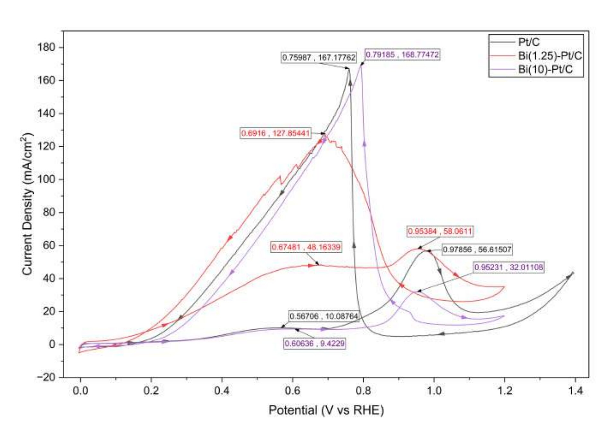
Cyclic voltammograms of Pt/C, Bi(1.25)-Pt/C and Bi(10)-Pt/C in 0.5 M formic acid at 50 mV/s. Thesis, Figure 4.10
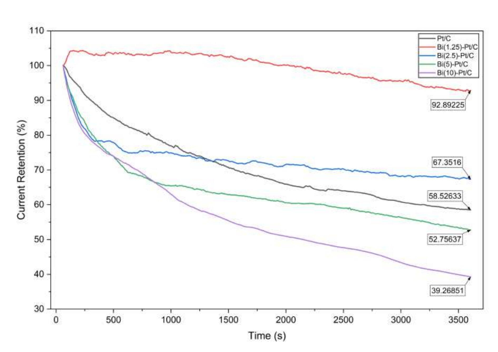
The measured retention curves behind the chart above, recorded over 3600 s at 0.55 V vs RHE. Thesis, Figure 4.14
What it doesn't show yet
Everything was measured in a three-electrode half-cell in acid. The next steps written into the thesis are building a membrane electrode assembly with Bi(1.25)-Pt/C and testing it in a single cell, and using in situ spectroscopy to watch the bismuth layer while it works.
What I took from it
A good-looking voltammogram is not the same as a durable catalyst, and an active-area number is not the same as usable activity. I now check durability before ranking anything, and I think about what each measurement can and cannot see.
Type
M.Tech thesis
Where
IIT Madras, with synthesis at NTNU, Norway
When
May 2025 to May 2026
Supervisor
Prof. Raghuram Chetty, Department of Chemical Engineering, IIT Madras